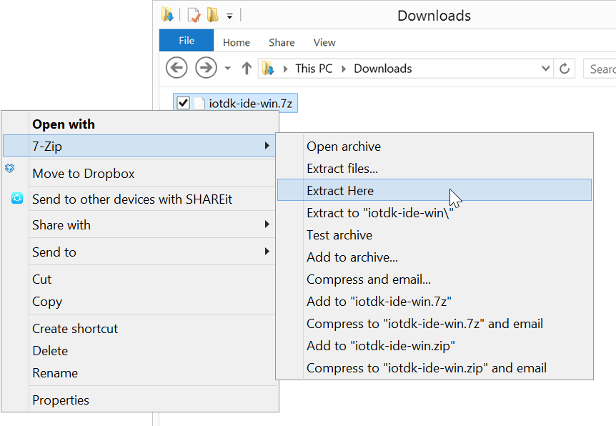

-
Get the latest IoT dev kit Eclipse IDE package.
- On the USB key: downloads → Windows
- Copy iotdk-ide-win.7z to your computer.
-
Use 7zip to extract the archive:
Use 7Zip only. Do not use any other Windows file archiver utility.
7zip supports extended file paths which some of the contents of the compressed file have so only use 7zip software to extract the file.
-
Right-click on iotdk-ide-win.7z.
-
Select “7zip”, then “Extract here”.

-
-
Wait for the extraction process to finish. It will take a a few minutes.